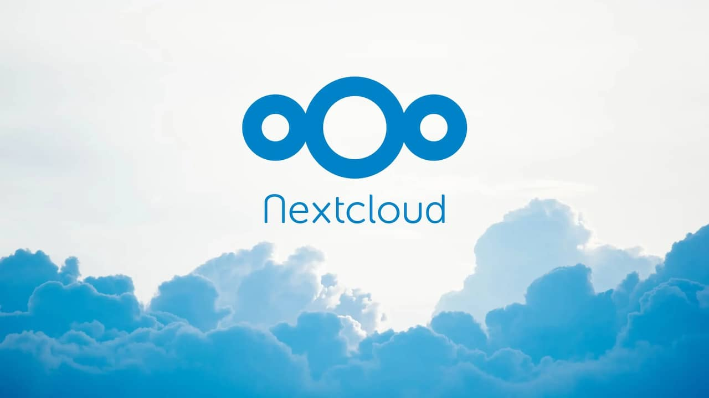

Firewall & network security
Firewalls, VPN and secure access for offices, branches and remote staff, chosen with you and written down.
See detailsFirewall and network security, networking, custom applications, websites, e-commerce and ERP, plus day-to-day IT for growing teams. We use enterprise tools where they make sense and open source where it is better, and you deal directly with the engineer who does the work.
Free call · No obligation · No sales pitch
Scope and price are agreed in writing before work starts.
To the engineer who does the work
Support: first response within 24 business hours
You keep every configuration, runbook and admin access
Enterprise or open source, whichever fits
Pick a service, or start with a free call and we will tell you what to do first.
Firewalls, VPN and secure access for offices, branches and remote staff, chosen with you and written down.
See detailsWired and wireless networks and the links between sites, planned first, set up in stages and documented.
See detailsCustom applications built around the way your business works, from a written scope to handover.
See detailsBusiness websites, online stores and ERP systems, set up around your processes.
See detailsDay-1 setup for new teams, and an IT retainer for ongoing help from the same engineer.
See detailsCut licence costs, move off VMware or Splunk, and watch your systems with monitoring and tested backups.
See detailsPick the one that sounds like you. You can always talk to us about more than one.
A new office, a second site, or a firewall nobody has looked at in years. We choose, set up or review it, and write down how it works.
See firewall & networkingSpreadsheets and manual steps holding you back, or a website, online store or ERP to set up. We write down what it must do before building anything.
See software & webA new company, first hires, and nothing set up yet. Or set up in a hurry and not sure it is safe.
See the Startup Launch PackLicence or cloud bills are climbing, or you want your security tightened without starting from scratch.
See cost & security optionsWorks with the tools you already use, and the ones we recommend
Most teams do not need an enterprise IT stack. They need the basics done properly. Here is what usually matters as a team grows.
These are technical safeguards, not legal advice. Not sure which stage you are in? Tell us on a free call.
Neither is better in every case. The right choice depends on your team, your budget and who will look after it. This is how we think about the common decisions.
| Decision | Enterprise option: choose it when… | Open-source option: choose it when… |
|---|---|---|
| Email, files & collaboration |
Google Workspace – your team works in the browser and wants the simplest administration. Microsoft 365 – you rely on desktop Word, Excel and Outlook, clients send Office files, or you need built-in device and security management. |
Nextcloud – your data must stay on servers you control and someone can keep that server updated. |
| Where your apps run |
AWS or Azure – traffic may grow fast or be unpredictable, you have no server room, and pay-as-you-go billing suits you. |
Proxmox on your own servers – workloads are steady, you want costs that stay flat, and someone can look after hardware, power and failures. |
| Firewall |
Fortinet – you want a vendor support contract, a polished console and purpose-built hardware, and the licence cost fits your budget. |
pfSense – you are comfortable with a hands-on setup and want a flexible firewall and VPN on standard hardware without per-device licences. |
| Backup |
Veeam – you back up many kinds of systems (VMware, Hyper-V, cloud, Microsoft 365) and want broad, vendor-backed restore options. |
Proxmox Backup Server – your servers already run on Proxmox. It is built for them, with deduplication and encryption, and no licence fee for the software (paid support is optional). |
| Security monitoring |
Splunk – you need deep analytics across very large log volumes and have the budget and staff to run it. |
Wazuh – you want threat detection, file-integrity monitoring and compliance-style checks without per-GB licensing, and someone to manage it for you. |
Already have licences? We work with what you already own.
What matters is what your business can do afterwards.
Two-step sign-in, encrypted laptops and access limited to the people who need it, so one lost phone or one weak password is not a crisis.
A simple joiner-and-leaver checklist, so email, files and tools are switched off on the last day, not discovered months later.
Backup copies that attackers cannot easily reach, and a restore you have actually tested. Designed so one bad day does not end the business.
Firewall rules and the network plan are written down, so nobody depends on one person’s memory.
A written scope and estimate up front, and a clear view of what each tool will cost you every month.
A written scope first, built in stages and tested with you, then handed over with documentation.
JwithKP is new, and we say so. What we can promise is how we work.
JwithKP, founder
JwithKP is a founder-led practice. The engineer who scopes your setup is the one who builds it and answers your calls, so there are no hand-offs and no sales layer between you and the person doing the work.
[ADD BACKGROUND]
Certifications: [ADD CERTIFICATIONS]
For teams that already have servers, licences or cloud bills in place.
We plan and run VMware-to-Proxmox moves in phases, with a tested rollback plan. Open-source virtualization can mean significantly lower licensing cost for suitable setups.
We estimate the saving by comparing your current annual VMware subscription with a Proxmox VE support subscription for the same number of CPU sockets, before one-time migration effort. Your saving depends on your edition, core count and renewal terms. How we calculate it.
See migration optionsManaged Wazuh SIEM watches the endpoints and logs it covers, with alert rules agreed with you. Support is business-hours; we do not run a 24x7 security operations centre.
See monitoring detailsImmutable backup copies on Proxmox Backup Server or Veeam, with restore tests, so recovery is a plan and not a hope.
See backup optionsWant to see how we would approach common situations? Read the example scenarios.
No surprise change orders. Here is what happens, in order.
Tell us what you need, your team size and budget in 30 minutes.
You get a written scope, a timeline and a cost estimate.
We build it in stages, test it, and fix what we find.
You keep every configuration, runbook and admin access. Credentials are handed over securely at the end of the project.
Ongoing support during agreed hours, with a direct line to the engineer.
Plain-language guides to the decisions above.


Short, honest answers. If yours is not here, ask on a free call.
Looking for payroll and attendance software instead? See our product, JwithKP HRMS .